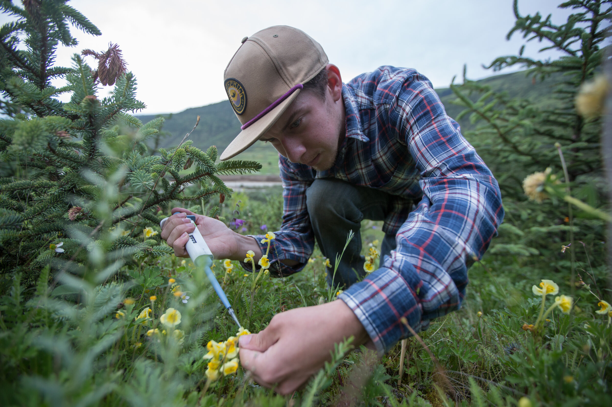

In September 2026, I’ll join Oregon State University’s Department of Botany and Plant Pathology as Assistant Professor and Herbarium Director. I am absolutely thrilled for this new chapter!
Research
We’ll probably focus on Monarda initially but will eventually expand to other North American angiosperms based on the interests of lab members. Our work will be united by questions about speciation, hybridization, genomics, and systematics. Throughout, we’ll continue developing theory and methods for population genomics and phylogenomics while emphasizing natural history through fieldwork, herbarium research, and projects driven by community-science data.

Lab culture
I want the lab to be welcoming and supportive. I was lucky to have wonderful lab communities throughout my training, and I want to give my trainees the same experience. Diversity of backgrounds, identities, and perspectives makes research communities stronger, and I'm committed to building an inclusive group where all members are respected, supported, and able to do their best work. In our work, I will emphasize care, reproducibility, open communication, and training suited to each person’s project. Finally... Science is FUN! I want us to approach our work with curiosity and enthusiasm.
Join us
The lab is growing! I welcome inquiries from prospective graduate students, Oregon State undergraduates, postdocs, and collaborators. Right now, I am especially keen to recruit a graduate student to begin in 2027. Please reach out!